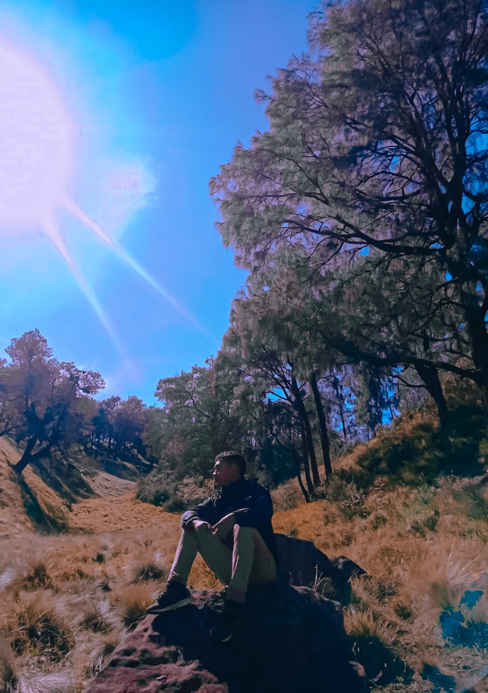

Halo, Ini saya
Agung Trylaksono
Dan Saya Pendaki Gunung
"Mendaki Langit, Menyentuh Bumi: Perjalanan Melampaui Batas"
Selamat datang di halaman portofolio saya, tempat di mana petualangan,
ketekunan, dan kecintaan pada alam bertemu. Saya Agung Trylaksono, seorang
pendaki gunung yang berusaha menjelajahi puncak-puncak tertinggi,
keindahan tersembunyi, dan pelajaran mendalam yang hanya bisa ditemukan di perjalanan.
Di sini, Anda akan menemukan kisah-kisah perjalanan, dokumentasi visual, serta pandangan
saya tentang bagaimana pendakian menghubungkan manusia dengan alam. Mari melangkah bersama
ke dunia yang penuh tantangan, inspirasi, dan keajaiban.
Baca Selengkapnya
